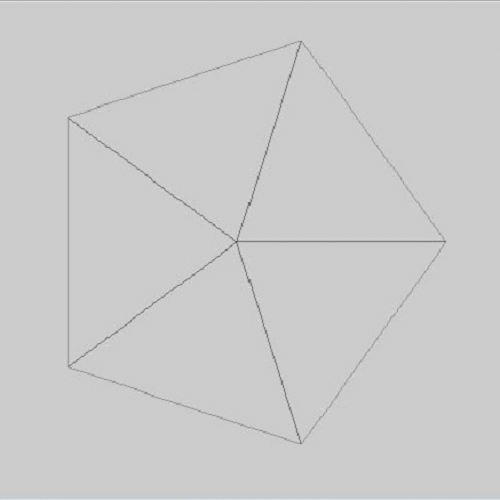
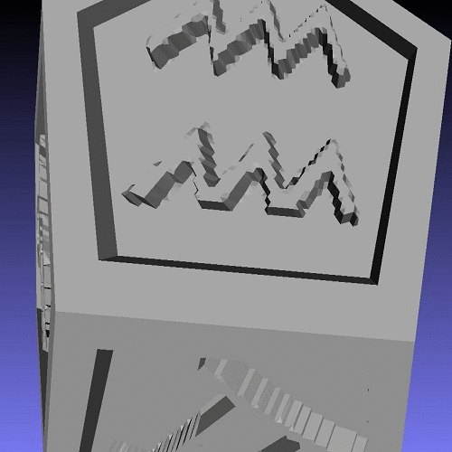

Procedures
(Understanding the dodecahedron data structure helps to understand the following.)
Chapter 1: The Essentials
The object started out as a simple dodecahedron that had 20 vertices with specific coordinates that made up the 12 pentagonal faces. To make the math slightly easier, we conceptually rotated the 12 faces such that the faces lay on the x-y plane. We then had to engrave symbols on each of the 12 pentagonal faces.
To engrave any symbol onto a face or surface, it must have some kind of "resolution," just like a picture would need square pixels. However, we decided to cut the pentagons into equilateral triangles instead of squares.
Each symbol is about to be engraved into the pentagons. They are, as of now, in JPEG form. Each pixel in the square picture can be represented by a number. Only one number is needed because the symbols are black and white, so there are no RBG colors.
However, you might be able to see a problem: the JPEG files are squares, while the faces are pentagons. Furthermore, the pentagons are "cut-up" into triangles, while the symbols are "cut-up" into squares (pixels). Therefore, the pentagon and the square would need to first be lined up, with the center of the pentagon and the square lined up to the origin of a universal coordinate system, which would also help determine which square corresponded to which triangle.
With this, everything is prepared. The whole pentagon is first engraved, then each triangle which corresponds to a black pixel is popped back up, while each triangle which corresponds to a white pixel is left untouched. Triangles which corresponds to a grayish color is partially pushed up, the darker the pixel, the higher the triangle gets lifted. Furthermore, the sides of the pentagon are also lifted back up.
The pentagons are now ready to be reassembled back into the dodecahedron. First, we must refer back to the original dodecahedron. In the original dodecahedron, we know the coordinates of the 5 corners of each pentagon, and only one corner is needed. We now find a random corner from the pentagon that was engraved in the previous step and the corner of the pentagon from the original dodecahedron that corresponds to the engraved pentagon. With the two corners and their coordinates, a rotation matrix is made with the help of MatLab functions, such as finding angles between two vectors (points can be thought of as vectors) and cross product. The rotation matrix can then be used to map all of the other points to its designated coordinate. A simple shift is then used to shift the pentagon to its final position to be conjoined with the other 11 pentagons.
Chapter 2: Prep to print
The dodecahedron is now finished if you plan on looking at it only from a computer screen. However, the edges of the dodecahedron are not "zipped" together and the dodecahedron is technically not enclosed. Because the vertices on the edges are not connected, the pentagons are not truly connected. In order to truly connect the pentagons, the duplicated vertices must be "unified." Our last concern was the fact that the coordinates have floating point errors, thus making it harder to determine which vertices were supposed to be the same vertices and which were actually two different vertices. Fortunately, there is a "sweet spot" between 10^-6 to 10^-13 to round to where no two different vertices will be close enough to accidentally be merged, while all floating point errors are minor enough to be rounded, and with that the dodecahedron is finished and ready to be printed!
Chapter 3: Beautify
The final part of the process was completed through taubin smoothing , which smooths the dodecahedron and helps with aliasing problems.  The resolution of the dodecahedron was raised serval times before the aliasing problem neutralized to an acceptable level. This, however, increased the file size exponentially. Therefore, for this project, users should be able to choose the desired resolution based on their computer's network speed and computational power. It has also been determined that the default for a regular computer is a medium resolution, while a phone/taablet can handle a small resolution. Users can also manually change the resolution. Furthermore, to make the images fit better, the images were shifted and cropped serval times. The code was also changed to make the edges slightly thinner and the images slightly smaller so that the images did not collide into the edges.
The dodecahedron is now essentially done. To see how the dodecahedron was put onto this website and the backbone behind all of this work, please visit the software credits page.